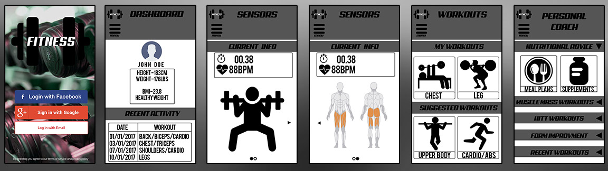

Mobile Application
The mobile app works in conjunction with both the wearable technology and the website. The app works as the middle man between the two and also incorporates many features in which it is able to help the user during workouts and post workouts.
You can find the app prototype by clicking here: AppPrototype
App Functionalities
The app communicates with the EMG sensors which measures electrical activity in response to a nerve’s stimulation of the muscle. The data from this is able to be used for looking at how hard the muscle is working to reduce risk of injury. From this, flex is able to give an insight of performance (in real time) by sending the data straight to the app where a live view model presents the current exercise.
App Features
The app has many features in which it is able to help during and post workouts by tracking recent progress, nutritional information, and performance. All these combined allow for an app that has it all, being able to see how you are performing during a workout and seeing which certain muscle groups are being worked the hardest will ensure that the user is able to get the best possible feedback for their workouts to see what they can improve on.
The app is created up of 4 main interface pages:
- The dashboard page is used for showing recent workouts that have been completed and personal details of the user in which they can update to calculate their BMI.
- The sensors page works in conjunction with the wearable tech as this allows the user to see a 3D animation of themselves working out so they can ensure they are doing each exercise with a good form to reduce the risk of injury. It also has a full body scan which will show which certain muscle are being used during the exercise from the tension of the muscles and is able to display how hard each muscle is worked due to the heat map.
- The workouts page is for displaying workouts, this can either be ones saved by the user or suggested workouts from the app and website. This will allow the user to ensure they are not missing out any exercises whilst working out or if they stuck on ideas of what to do for each muscle group they are able to get suggested ones targeting certain areas of the body. Another thing this is good for is for knowing how many sets and reps each exercise should be.
- The final page of the app is the personal coach where things such as nutritional advice, general fitness advice, form improvement or certain types of training that a user could complete is provided to help get improve the user as much as it can.